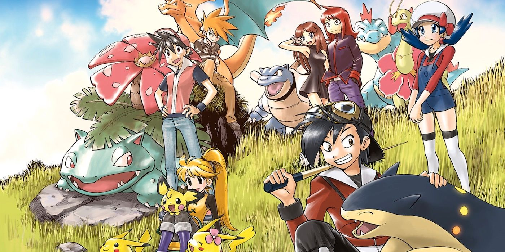
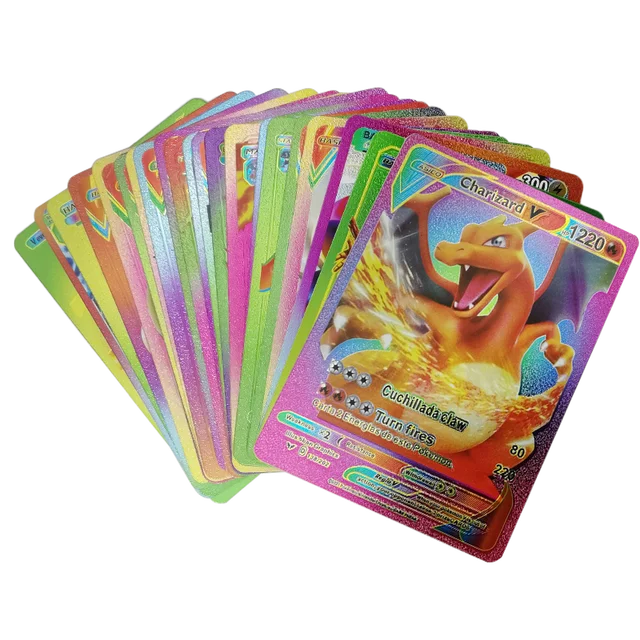
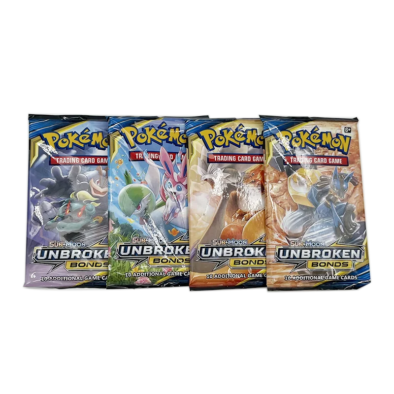
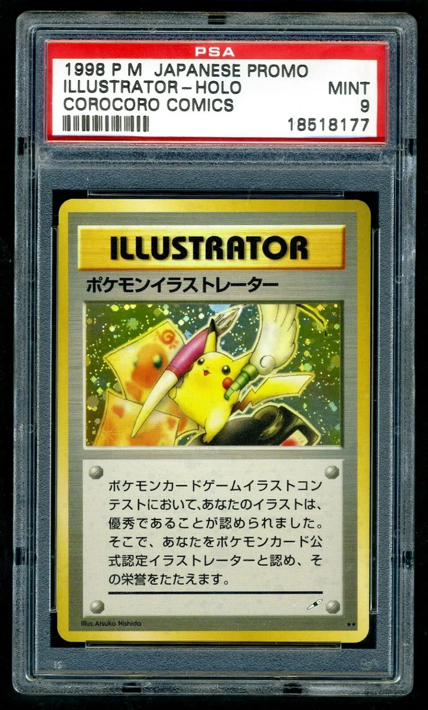

Pokémon mangá
Mangá De Pokémon?
O mangá Pokémon Adventures começou a ser publicado em 1997, junto com outras mídias da franquia (como o anime) e tem como diferencial ser a produção do universo de Pokémon que mais se parece com os jogos e suas respectivas gerações.
"Este é o mangá que mais se parece com o mundo que eu estava tentando transmitir", disse Satoshi Tajiri, criador de Pokémon.
Card Pokémon.
Card Pokémon que vale uma casa?
 Essas são algumas cards de pokémon comum(Publicado pela primeira vez em outubro de 1996, pela Media Factory, no Japão. Nos Estados Unidos, foi inicialmente publicado pela Wizards of the Coast; sendo assumida pela Nintendo em junho de 2003. No Brasil, foi lançado em 2000 pela Devir Livraria, sendo assumido pela Copag em 2011.[3] O jogo foi vendido em 23,6 bilhões de cartas ao redor do mundo em 2014. O jogo teve uma adaptação para o online e liberado para download no site oficial de Pokémon e nas plataformas Apple Store e Google Play Store.)
Mas toda coleção, tem as suas coisas mais "raras" mas cards de pokémon ultrapassa os limites , tendo uma das cartas mais cara vendida, no valor de UM MILHÃO DE REAIS
